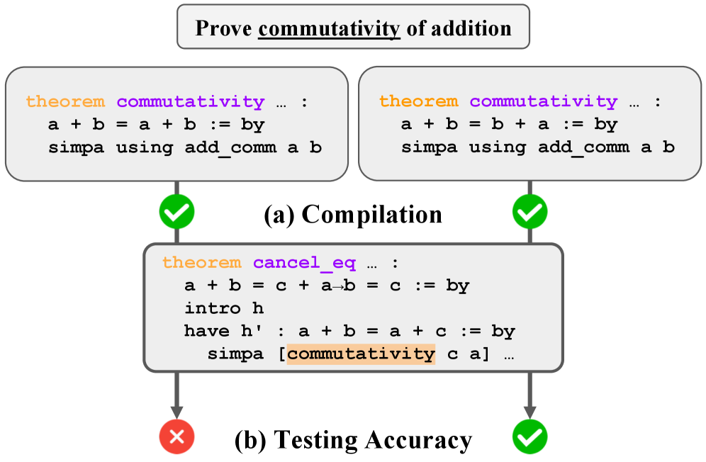
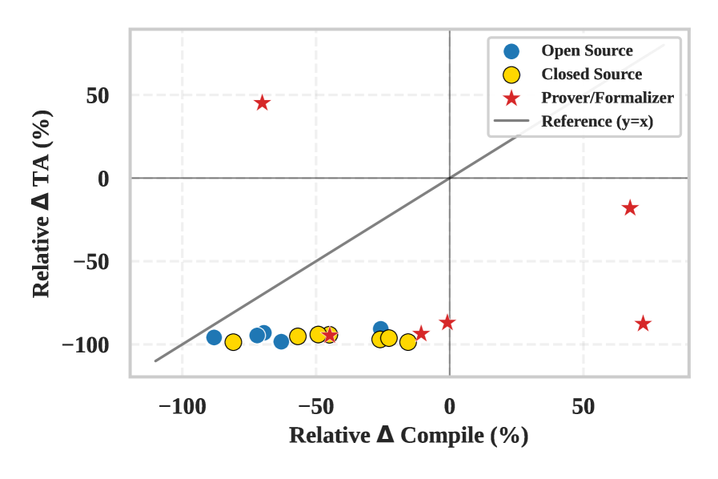

Constructs a semantic-correctness benchmark from 5 real-world Lean 4 repositories.
Abstract
Recent advances in large language models (LLMs) have shown promise in formal theorem proving, yet evaluating semantic correctness remains challenging. Existing evaluations rely on indirect proxies such as lexical overlap with human-annotated proof, or expensive manual inspection. Inspired by the shift from lexical comparison to test-based evaluation in code generation, we propose T , a framework that evaluates the semantic correctness of formal theorems: a generated theorem is considered correct only if all dependent successor theorems compile successfully, analogous to integration testing. We construct a benchmark from 5 real-world Lean 4 repositories, comprising 2,206 problems paired with 41 successor theorems on average, automatically extracted without human effort. Experiments demonstrate that while state-of-the-art models achieve high compilation success, they perform significantly worse under our semantic metric. The best model, Claude-Sonnet-4.5, achieves only 38.9% Testing Accuracy on the full set, given both natural language proof and successor theorems as context, revealing a critical gap in current theorem generation capabilities.
Problem
Evaluating the semantic correctness of generated formal theorems is challenging. Existing evaluations rely on compilation (which accepts tautologies) or expensive manual inspection, failing to detect statements that are logically valid but semantically unfaithful to the intended theorem.
Approach
The authors propose T2, a testing-based evaluation framework for formal theorems in Lean. A generated theorem is considered correct only if all dependent successor theorems compile successfully when using it, analogous to integration testing in software engineering. The framework extracts dependency graphs from Lean repositories, identifies successor theorems for each target, and evaluates whether a candidate theorem supports its downstream dependents. The benchmark is constructed via a fully automated, dependency-aware extraction pipeline.

Figure 1: Two candidate theorems for proving commutativity of addition: one correct ( a+b=b+a ) and one tautology ( a+b=a+b ).(a) Under compilation-based evaluation, both candidates pass, as each is logically valid in isolation.(b) Under testing-based evaluation, the tautology is exposed: the successor theorem ( cancel_eq ) fails when it depends on the incorrect candidate, while it compiles succes
Results
On T2 Hard, even the best models show large performance drops: Claude-4-Sonnet achieves 81.1% compilation but only 36.0% testing accuracy (TA) on T2, dropping to 47.5% compilation and 4.5% TA on T2 Hard. GPT-5 reaches 85.7% compilation but only 37.7% TA on T2 and 3.4% on T2 Hard. Prover/formalizer models show compilation gains that do not translate to TA improvements.

Figure 3: Relative performance drop from existing benchmarks to T 2 Hard, in compilation accuracy (x-axis) vs. TA(y-axis).Prover/Formalizer models ( red stars) in the lower-right quadrant, where compilation gains do not translate to TAimprovements.